功能總覽
首頁 Dashboard Core
進入後台首先看到統計卡片：今日發文數、成功率、社團數、佇列中待發。下方的「近 7 天發文趨勢」圖表讓你掌握每日產出。底部快速操作區一鍵跳轉至發文、排程、社團管理。
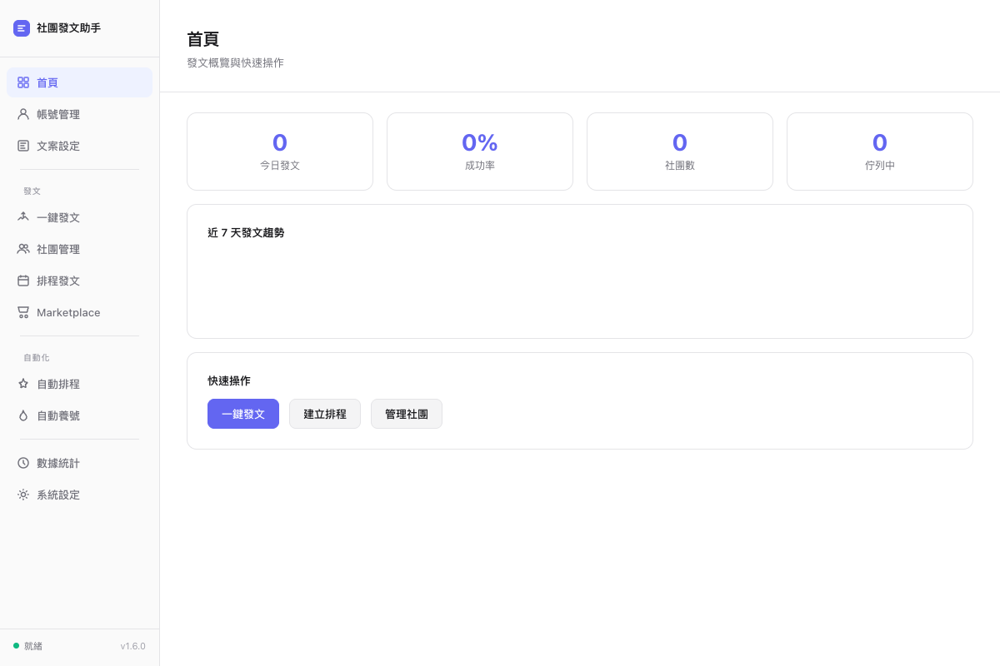
帳號管理 Security
支援多 Profile 切換，切換帳號後社團清單與名片資訊自動跟隨。FB 帳號密碼僅存本機瀏覽器，永不外傳。「我的名片」填入姓名和電話，591 匯入時自動替換為你的聯絡方式。
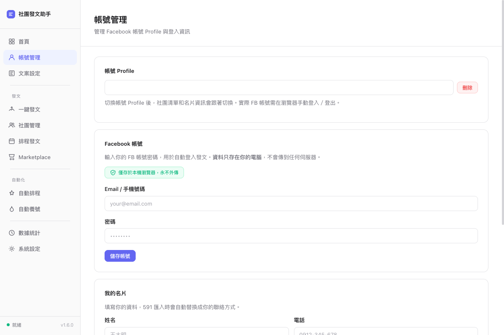
文案設定 Spintax
建立可重複使用的文案模板。支援 Spintax 語法（如 {選項A|選項B}），每次發文自動隨機替換，讓每篇貼文字略有不同，降低被偵測為批量發文的風險。
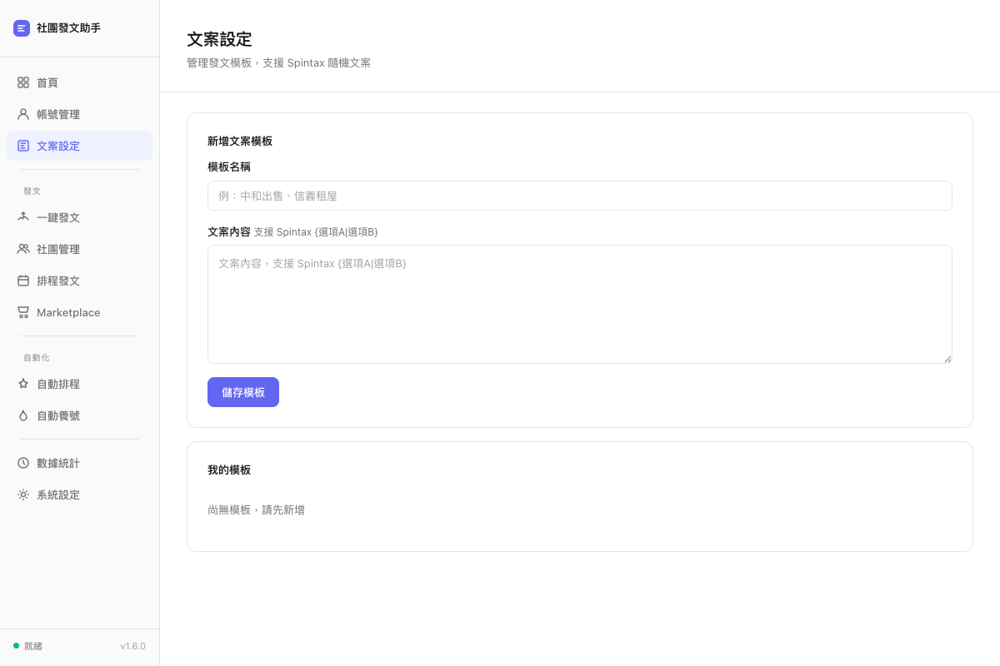
一鍵發文 Core
核心功能。支援三種匯入方式：貼上 591/HouseBox 連結批量擷取（最多 30 筆）、PDF 批量匯入（整個資料夾）、手動建立發文。系統自動抓取標題、價格、圖片，組成佇列後一鍵發送到所有已選社團。
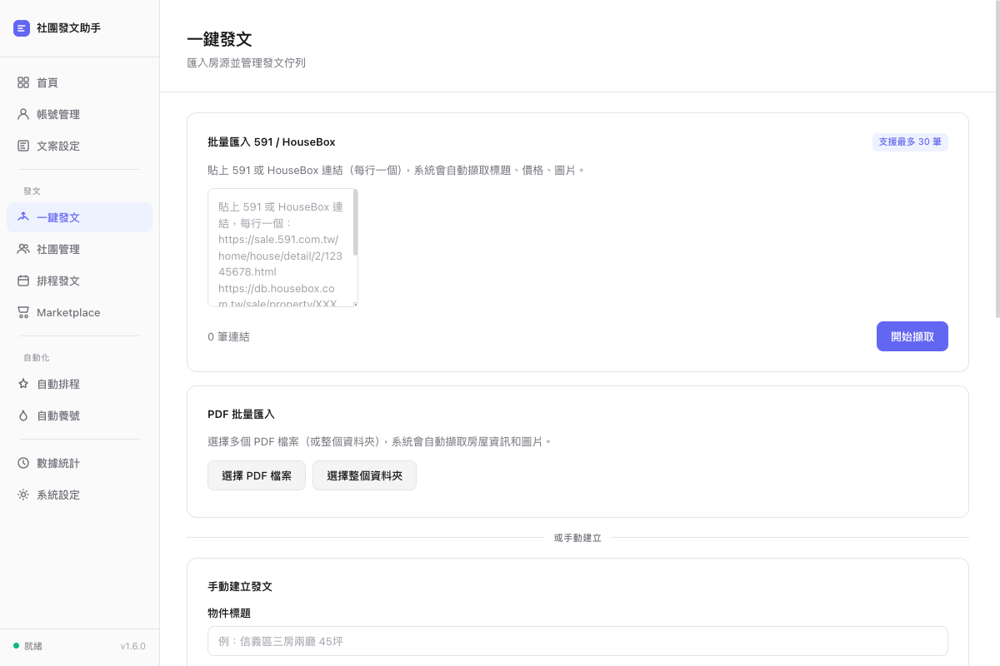
社團管理 Smart
關鍵字搜尋 Facebook 社團，勾選後一鍵申請加入並自動存入清單。內建 10 個精選推薦房仲社團，一鍵全部加入。「社群包」功能可將社團分組（如：台北租屋、中和買房），發文時套用整組社團。到 FB 社團頁面還會自動偵測並提示加入。
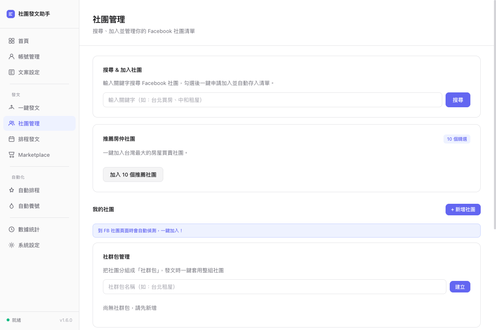
排程發文
設定自動發文時間，每天定時發文。在「一鍵發文」頁面的佇列項目中點擊排程按鈕即可新增。排程列表集中管理所有待發任務，到了指定時間系統自動執行。
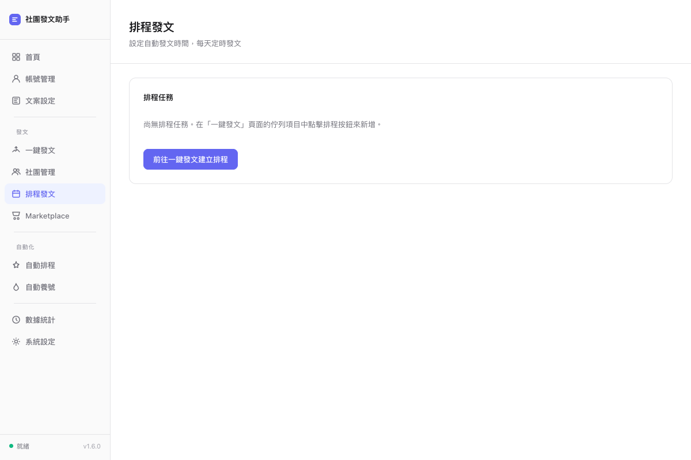
Marketplace 上架 New
除了社團發文，還能一鍵上架到 Facebook Marketplace。物件從「一鍵發文」頁面的佇列直接帶入，省去重複輸入，同一物件同時覆蓋社團 + Marketplace 雙通路曝光。
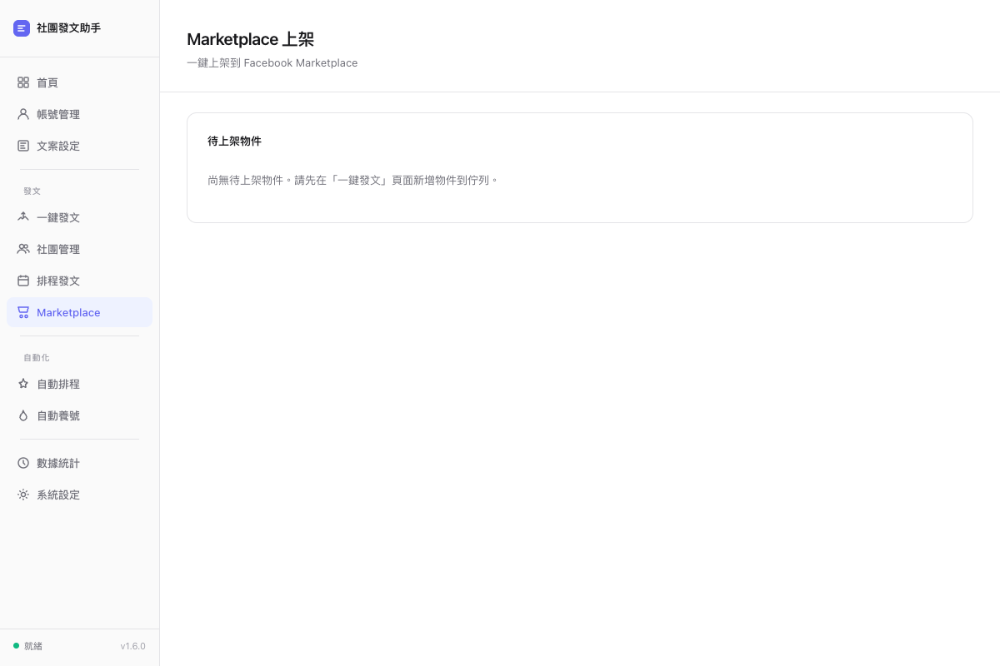
自動排程 Auto
自動化任務總覽：自動社團發文、自動加入社團、自動刪文、熱門貼文留言。可個別開關，狀態即時顯示「運行中 / 未設定」。發文設定包含每篇間隔（建議 2-3 分鐘）、智慧延遲、自動刪文天數、文案微變化、發文完成通知。
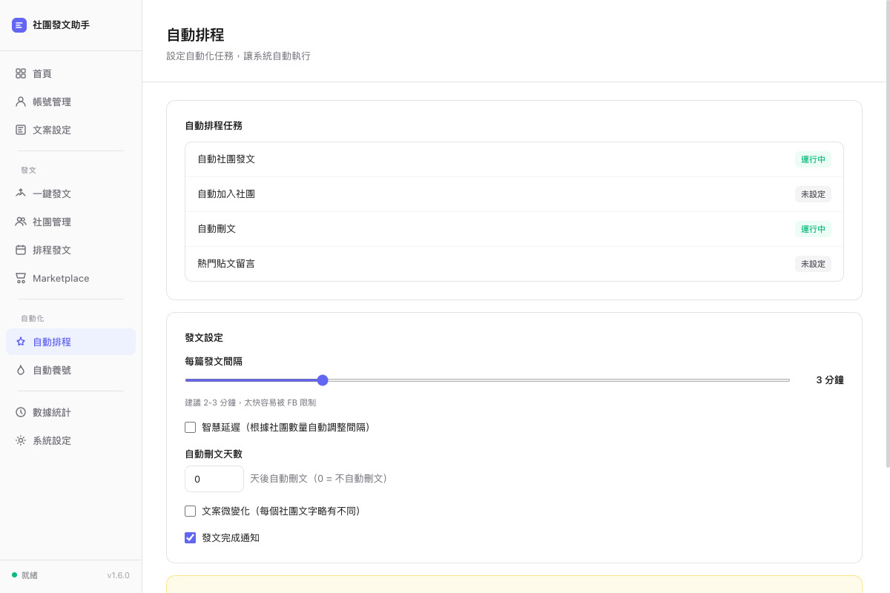
自動養號 Anti-Ban
模擬真人使用 Facebook，降低帳號被偵測為自動化的風險。「自動留言」對社團最新貼文留言（支援 Spintax），增加互動和曝光。「自動養號」執行滑動態、按讚、留言等行為，分一般（10 分鐘）和熱門模式。
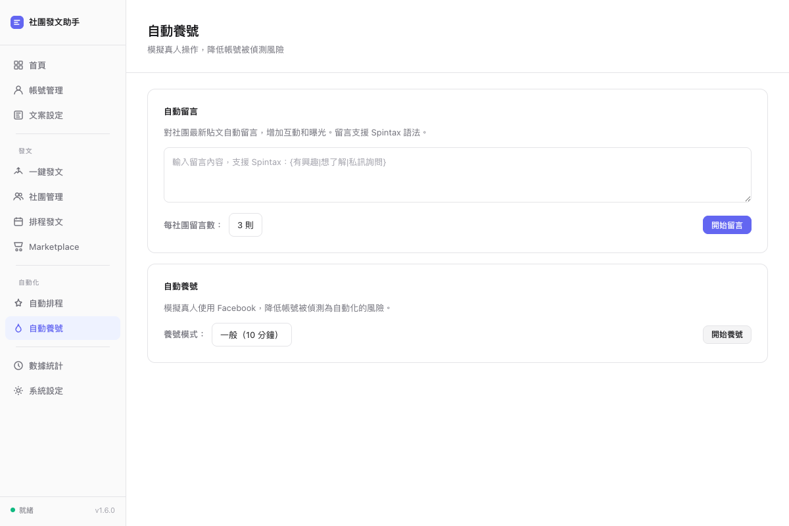
數據統計
追蹤所有發文記錄，按狀態篩選：已發、待刪、失敗、已刪。統計儀表板可展開查看成功率與社團排行。支援搜尋特定社團或文案，批量管理已發佈貼文。
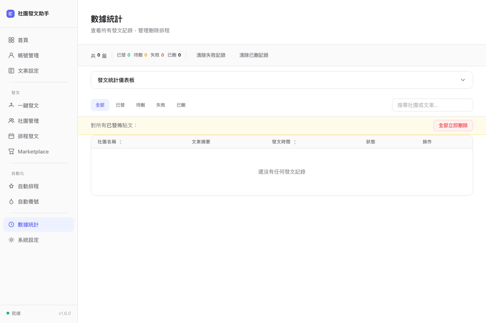
系統設定 Security
授權碼管理（支援免費試用申請）。發文操作畫面可選擇顯示或隱藏瀏覽器自動操作過程。進階防偵測：啟用指紋遮罩（WebDriver 隱藏、Canvas 指紋微擾、WebGL 資訊模糊、語言一致性），建議保持開啟。資料管理支援匯出、匯入、清除。
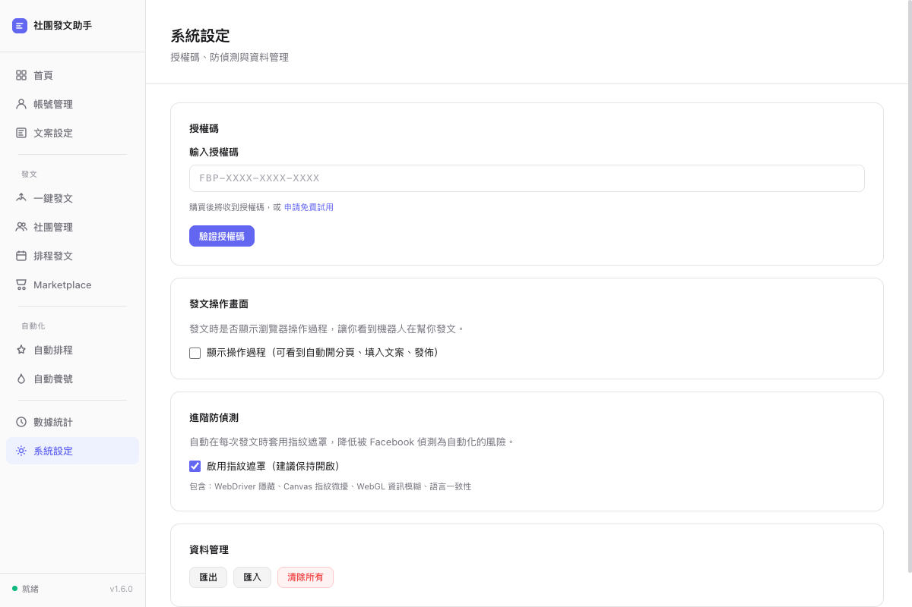
實際發文流程
完整流程：從 HouseBox 擷取物件資訊 → 系統自動組成文案（含標題、價格、坪數、格局、圖片）→ 開啟 FB 社團 compose dialog → 自動填入內容和圖片 → 點擊發佈。全程自動，房仲只需貼上連結。
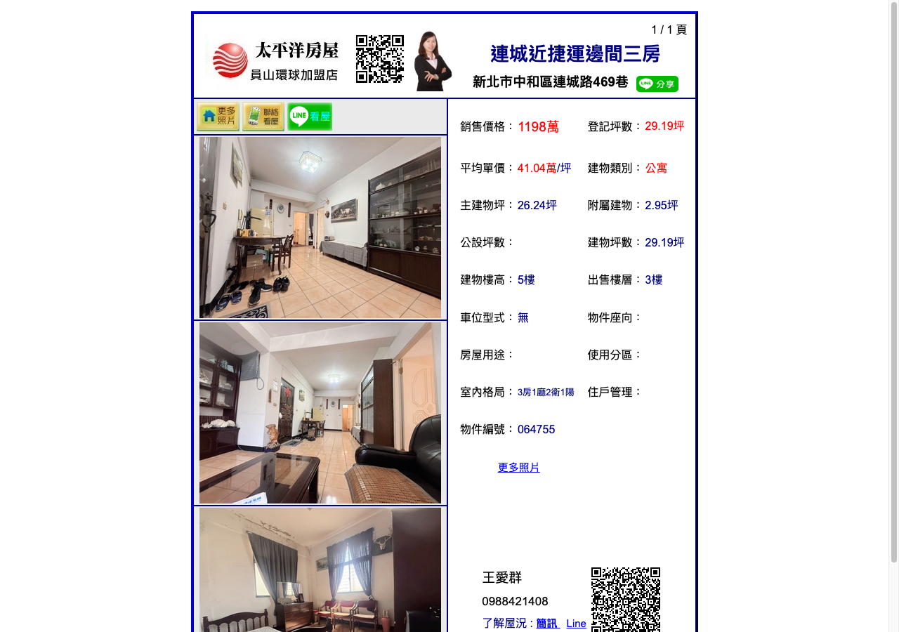
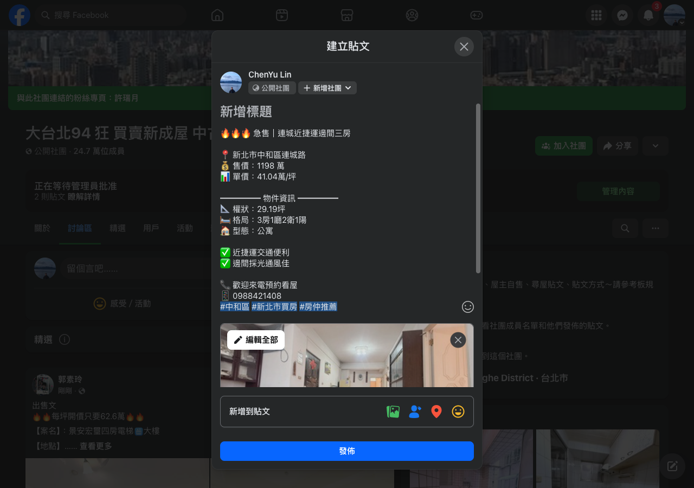
技術亮點
相比市面上的「行銷快手」等競品，我們的核心技術優勢
Playwright 自動化
使用 Playwright 驅動真實 Chromium，非 HTTP 請求模擬，完整重現用戶操作，FB 無法從 API 層面偵測。
指紋遮罩防偵測
WebDriver 隱藏、Canvas 指紋微擾、WebGL 資訊模糊、語言一致性，四層防護讓 FB 反自動化偵測失效。
591 / HouseBox 爬蟲
一鍵擷取 591 和 HouseBox 物件資料（標題、價格、坪數、格局、圖片），競品只能手動輸入。
Spintax 文案引擎
每篇貼文自動隨機替換用字，搭配文案微變化功能，每個社團的發文都略有不同，避免被標記為 spam。
智慧延遲 + 養號
根據社團數量自動調整發文間隔，搭配自動養號（滑動態、按讚、留言）模擬真人行為，長期保護帳號安全。
本機架構零風險
帳號密碼純本地存儲，不經任何第三方伺服器。對比競品的雲端代發，零資料外洩風險。
社群包批量管理
社團分組 + 標籤分類 + 推薦社團 + 搜尋加入，管理數十個社團只需幾秒。競品需逐一手動操作。
PDF 批量匯入
支援整個資料夾的 PDF 檔案批量匯入，自動擷取房屋資訊和圖片。傳統做法需一筆一筆手工建立。